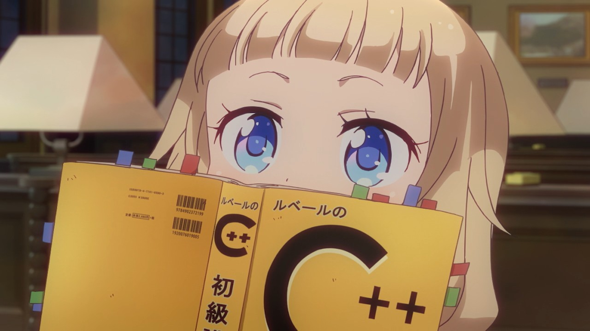

De uma forma geral, o termo anime significa em japonês que é a sua língua nativa, “animação”. E nesse país, ele é utilizado para fazer referência a qualquer animação, ou seja, desenho que exista.

A maior distribuidora de animes no Brasil, a plataforma de streaming Crunchyroll, divulgou informações sobre o consumo de animes no Brasil no primeiro trimestre de 2020.
A história se passa em um mundo onde os humanos construíram grandes muralhas para se protegerem da ameaça dos gigantes Titãs.
Em um mundo onde a maioria da população possui poderes especiais, Midoriya Izuku, que nasceu sem poderes, decide se tornar um herói para combater o crime.
Após ter sua família morta por demônios, o jovem Tanjiro decide se tornar um caçador de demônios pelo Japão.